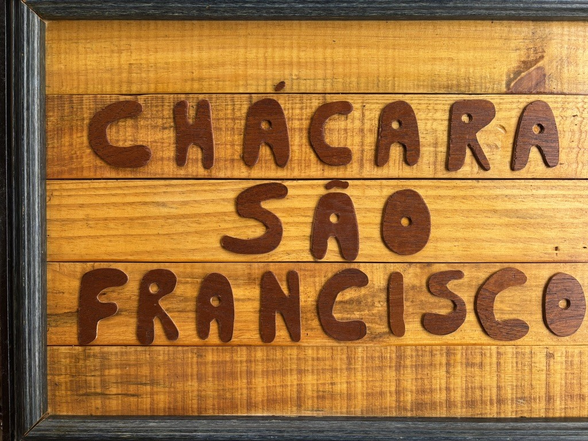

Placa original × fonte

CHÁCARA
SÃO
FRANCISCO
SÃO
FRANCISCO
Teste: clique e digite
Pão de queijo, ovos caipiras e mel: R$ 25,00
Versões de cada letra
Na placa, cada letra repetida foi recortada de um jeito. A fonte guarda essas versões e alterna entre elas sozinha quando a letra se repete, para o texto não parecer carimbado.
AAACCCRRSSOOHHII
Exemplos
BOLO DE MILHO
VENDE-SE OVOS · QUEIJO FRESCO
JABUTICABA, GOIABA & MARACUJÁ
SÍTIO · POUSADA · HORTA · Nº 7 · KM 12 · 50% OFF · “BEM-VINDOS!”
Caracteres
Como instalar
Mac
Abra o .zip, dê dois cliques em Chacara-Regular.otf e clique em “Instalar fonte”.
Windows
Abra o .zip, clique com o botão direito em Chacara-Regular.ttf e escolha “Instalar”.
Canva e outros
Em “Enviar fonte” ou “Upload”, use o arquivo .ttf.